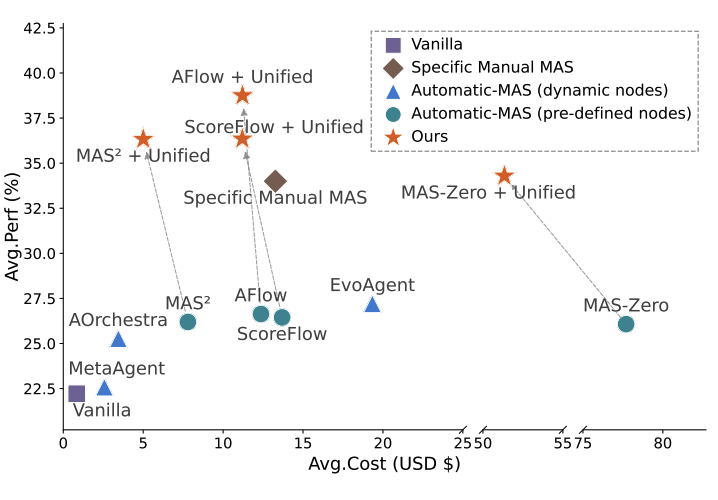
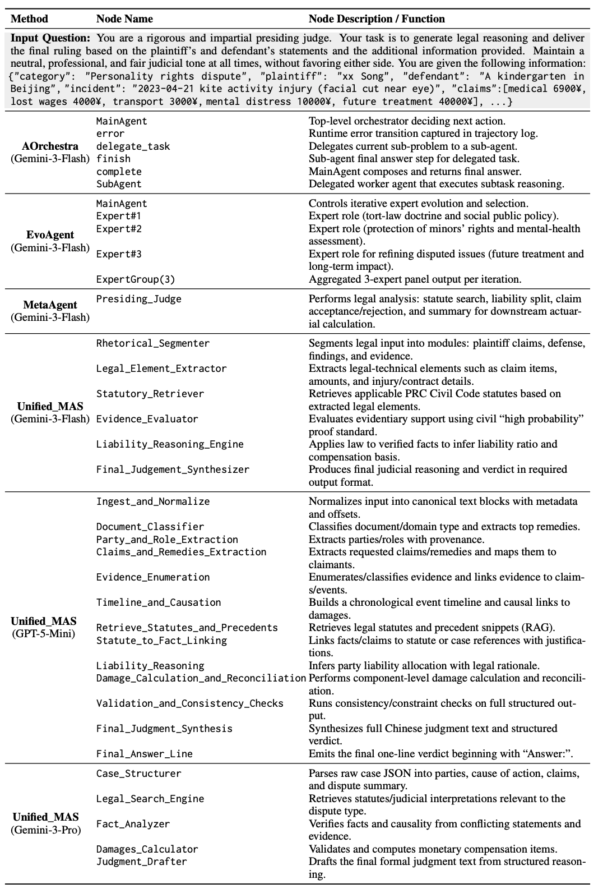

第二部分：Unified-MAS：掌握领域深度
知识缺口：为何自动化 MAS 在专业领域失败
第一部分表明，自动化 MAS 存在严重的架构退化问题。当应用于知识密集型领域（如医疗、 法律和金融）时，现有框架面临根本性瓶颈。它们要么依赖缺乏专业知识的通用节点静态库（如思维链、辩论）， 要么尝试动态生成节点——但编排器受内部参数化知识的限制，不得不同时设计领域专用逻辑并优化高层拓扑。 这种架构耦合严重损害了系统的实际效能。

核心洞见：将"做什么"与"如何做"解耦
我们提出Unified-MAS，通过离线节点合成将细粒度节点实现与拓扑编排解耦。 与让编排器同时承担设计领域专用智能体和优化其连接关系的任务不同，Unified-MAS 充当 离线节点合成器，在任何拓扑搜索开始之前生成专家级节点。该框架分两个阶段运行：

阶段一 · 关键词提取
采样验证实例，沿七个维度提取关键词：领域、任务、实体、动作、约束、期望结果和隐性知识。
阶段一 · 策略搜索
四种搜索策略分别针对背景知识（Scholar）、系统架构（Google）、代码仓库（GitHub）和评估基准，将节点合成扎根于真实领域知识。
阶段二 · 奖励评分
在验证数据上执行节点，计算困惑度引导的奖励，衡量每个节点对最终答案的改进和一致性贡献。
阶段二 · 瓶颈优化
每轮识别最低奖励节点，优化其提示或添加子调用，重复直至性能收敛，通常在 10 轮内完成。
结果：更优的成本-性能权衡


Unified-MAS 扮演了通用节点合成器的角色。生成的节点可直接插入 MAS-Zero、AFlow、 ScoreFlow 和 MAS²，无需修改其高层编排器，将通用自动化 MAS 提升为领域专家—— 在四个 LLM 骨干上均取得了稳定收益。以 J1Bench（法律判决）为例， Unified-MAS 生成了如下结构化的司法流水线： 法律要件提取器 事实分析器 责任推理器 损害赔偿计算器 判决起草器，取代了动态生成方法通常产出的表面集成节点（"Expert1"、"Expert2"）：

关键发现
外部检索是关键的区分因素：它将节点生成从幻觉命名转化为根植于真实领域知识的专家工作流设计。生成的节点蕴含了可追溯、立足于领域的推理阶段。
核心洞见
Unified-MAS 不局限于任何单一设计 LLM。Gemini 模型合成简洁的宏观级工作流（约 5 至 6 个节点），而 GPT-5-Mini 偏好微观级粒度（约 10 个节点）：Unified-MAS 在所有骨干上均持续驱动显著收益。
流水线探索演示
浏览我们论文基准中的预计算搜索产物，观察 Unified-MAS 如何提取任务关键词、 制定多策略搜索查询、分析检索内容，并逐步生成可执行的流水线节点。
在线演示中自定义搜索已禁用（需要 API 密钥）。如需本地尝试您自己的问题：
bash run_demo_inference.sh "Your task description" gemini-3-pro-preview